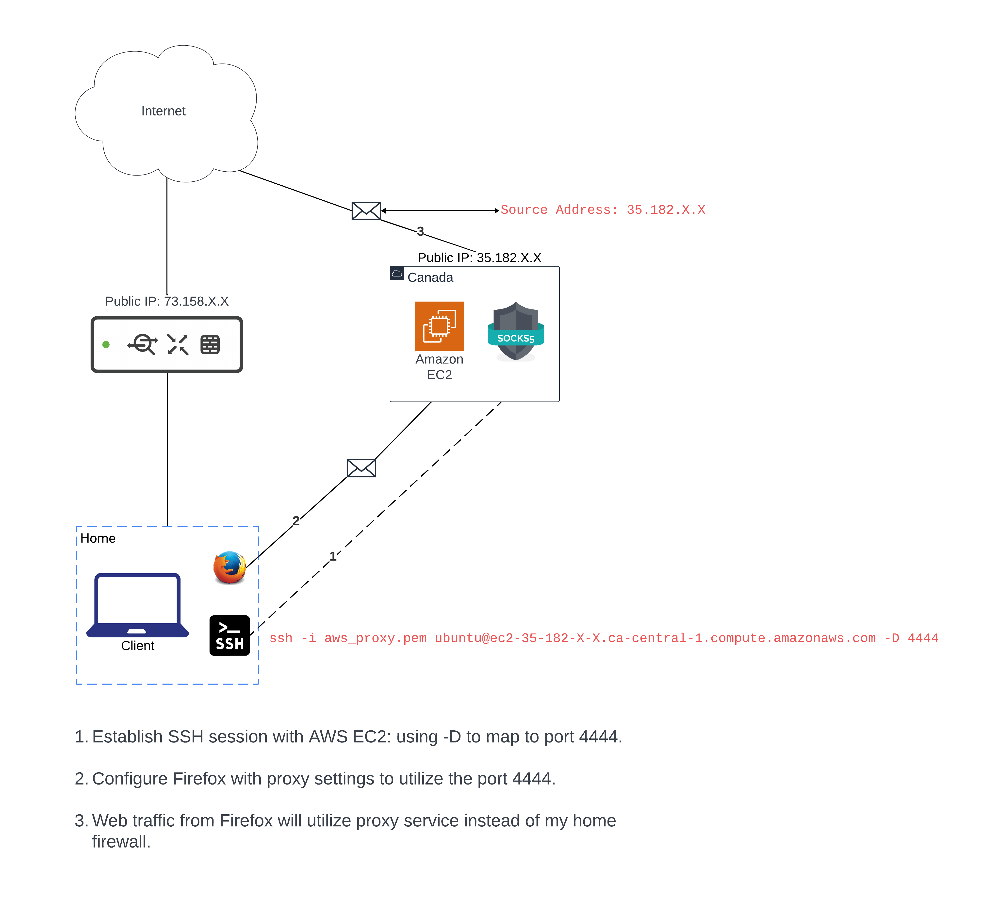

How to Set Up an AWS EC2 as a SOCKS5 Proxy #
Summary #
This guide will walk you through how to configure an Amazon EC2 as a SOCKS5 proxy.
You will then be able to establish an SSH session to the proxy from your computer and tunnel internet traffic through the proxy. This will change the source IP of your outgoing traffic (NAT).
Pre-requisites #
- Computer
- AWS account
- Some command line knowledge
Configuration Steps #
-
Sign-in to your AWS account
-
Navigate to
Services > EC2
- Click on
Launch Instance
- Name your instance, select
Ubuntuand choose theFree tier elibible AMI - t2.micro
- Click on
Create new key pairto generate the SSH keys for your instance.
- Choose a name for it and click on
Create key pair
This keypair will allow you to SSH into your instance from your computer. To learn more about how asymmetric encryption works, read through this article
- In the Network settings, I recommend you only allow SSH access from your own public IP.
-
Leave all of the other settings as default and click
Launch instance. -
You can navigate to
EC2 > Instancesand wait for you instance to transition to a running state. Click on the instance id to view details.
- From the Instance Summary page, make note of your public IP - this will be the new source IP that will appear to any destination server you request resources from. You should also copy the
Public IPv4 DNSaddress to your clipboard and paste it somewhere you can reference later.
-
Go to your computer and copy your downloaded SSH keypair into the destination of your choice. I chose to move the ssh keys from the Downloads directory to my
~/.ssh/directory. I used this command:mv Downloads/aws_proxy.pem ~/.ssh -
If you haven’t already, you can also generate your own SSH keys to copy to the new EC2 instance you created to make connection to your instance faster:
Generate your SSH keys: ssh-keygen -b 4096 -t rsa
Follow the prompts to save your keys in the ~/.ssh directory.
- Copy the Public DNS address of your EC2 instance you saved earlier and enter the following command to SSH into your new instance.
ssh -i aws_proxy.pem ubuntu@your_public_dns -D 4444
The default hostname is ubuntu
Make sure to add your public DNS address after @
4444 is an ephemeral port you will use for the web socket.
Send traffic through the proxy #
-
Open Firefox and go to settings.
-
Find the Proxy settings
-
Click on
Settings
- Specify
Manual proxy configuration
Leave the SOCKS Host as your localhost and specify port 4444.
- Now you can navigate to any site using Firefox and the site you’re trying to reach will see the public IP of your EC2 instance.